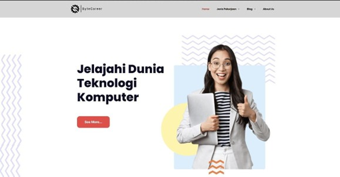
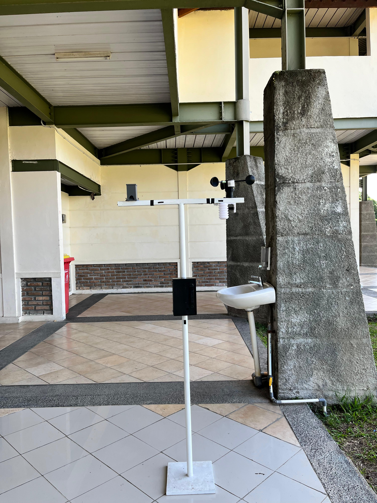
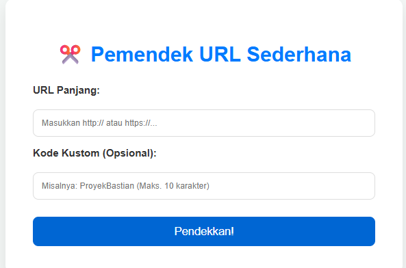

Proyek Pilihan

Job Info Teknologi Komputer
Website portal informasi lowongan kerja dan magang khusus mahasiswa Teknologi Komputer.

IoT Weather Data Collector
Sistem IoT pemantau suhu & kelembaban real-time untuk analisis lingkungan.

Self-Sufficient IoT Weather Station
Stasiun pemantau cuaca otonom bertenaga surya yang menyediakan layanan data cuaca (Data as a Service) berbasis IoT.

Link Shortener App
Aplikasi pemendek URL modern, dibangun menggunakan PHP Native, MySQL (PDO), dan diisolasi menggunakan Docker.